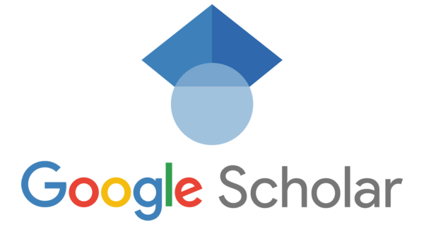
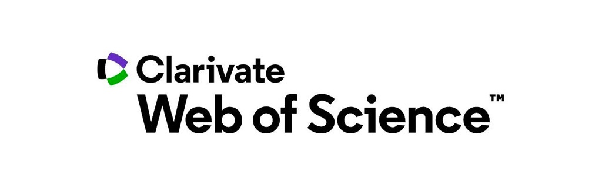
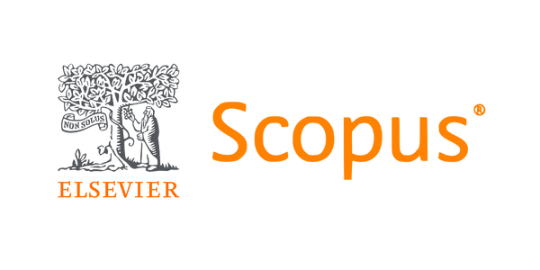
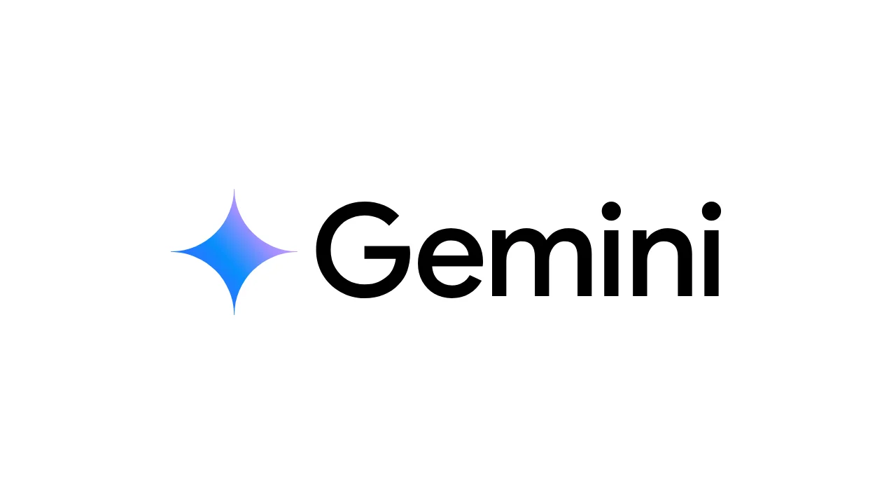
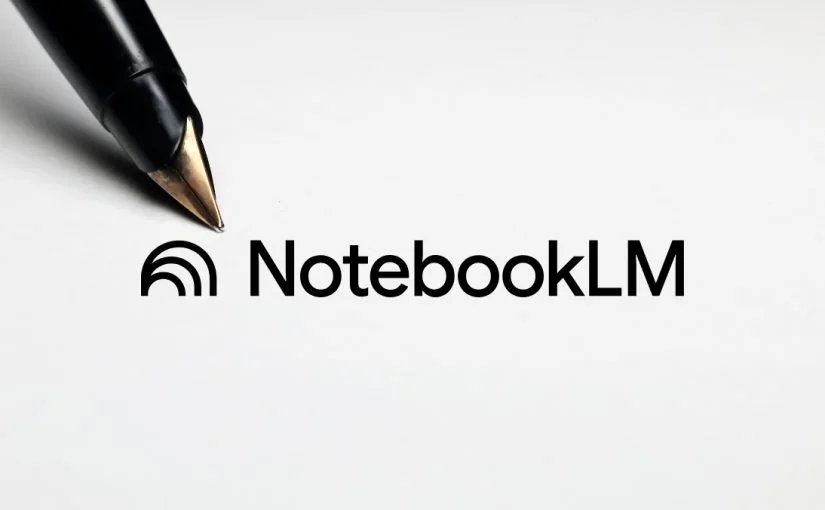
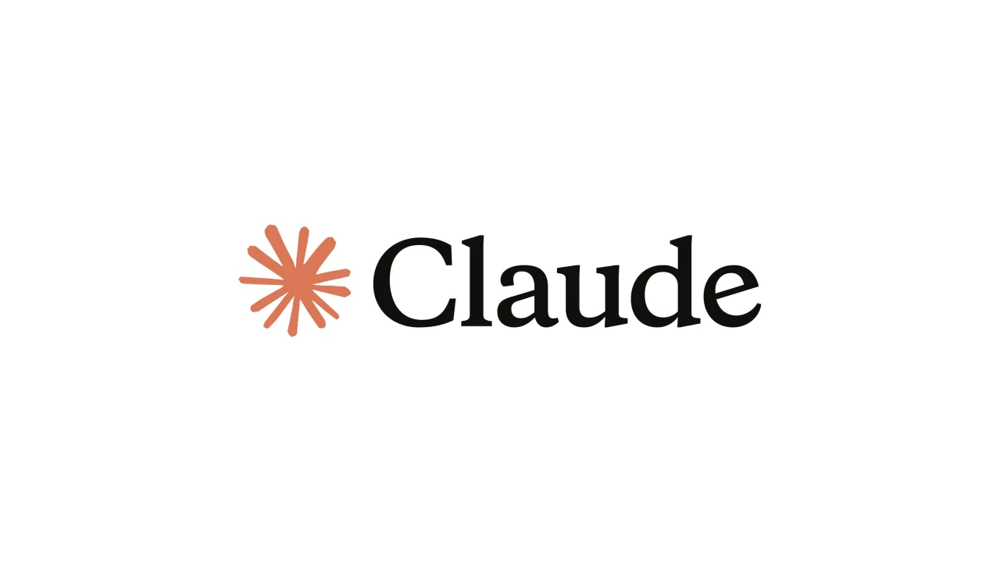
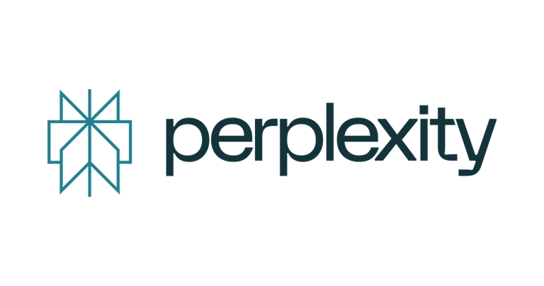
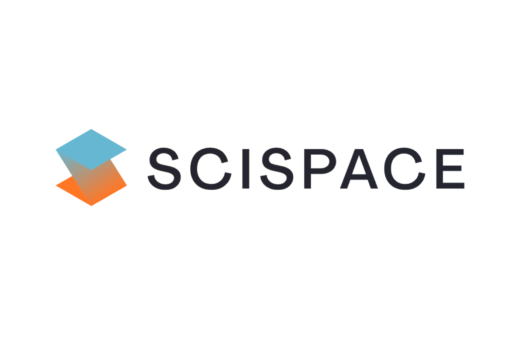
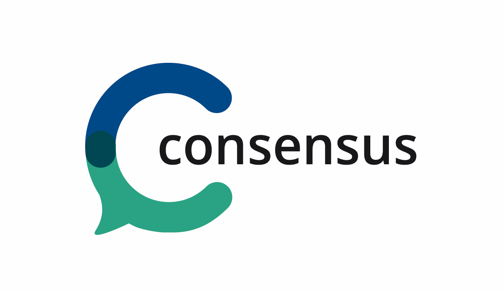
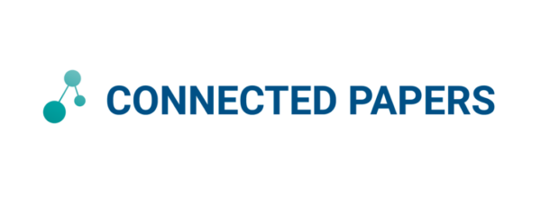

Búsqueda bibliográfica y herramientas de IA
Once plataformas para encontrar, analizar y sintetizar literatura científica — de las bases de datos académicas clásicas a los nuevos agentes de investigación con inteligencia artificial.
Las plataformas de búsqueda académica son fundamentalmente diferentes de los motores de búsqueda generales. Mientras un buscador web indexa páginas de todo tipo, las bases de datos académicas se enfocan exclusivamente en artículos de revistas científicas, tesis doctorales, actas de conferencias, patentes y libros técnicos. Esta guía cubre dos mundos complementarios: las plataformas clásicas que llevan décadas organizando la literatura, y las nuevas herramientas de IA que están transformando cómo buscamos, leemos y sintetizamos el conocimiento.
En esta guía · dos partes
Parte I
Búsqueda clásica
Haz clic en cualquier herramienta del índice o de la barra lateral para verla sola; vuelve a hacer clic sobre ella —o usa «← Ver todo»— para mostrar de nuevo la guía completa.
1. Google Scholar

Google Scholar es un motor de búsqueda académico gratuito lanzado por Google en noviembre de 2004. Indexa el texto completo y los metadatos de literatura científica proveniente de una amplia variedad de fuentes: editoriales académicas, bibliotecas universitarias, repositorios institucionales, servidores de preprints y sitios web académicos. Su objetivo es organizar la información académica del mundo y hacerla universalmente accesible.
Cómo funciona el ranking
Google Scholar ordena los resultados incorporando señales específicas del ámbito académico. Los factores principales incluyen: el número de citas que ha recibido un artículo (posiblemente el factor más importante), la relevancia del texto completo respecto a la consulta, el prestigio de la fuente de publicación, y la fecha de publicación. Un artículo altamente citado y publicado en una revista reconocida aparecerá típicamente en las primeras posiciones.
Actualizaciones 2025-2026
Acceso y costo
Google Scholar es completamente gratuito y no requiere suscripción institucional. Sin embargo, muchos de los artículos que indexa están detrás de muros de pago (paywalls) de las editoriales. Scholar intenta encontrar versiones de acceso abierto (open access) de los artículos — busca en repositorios institucionales, páginas personales de autores y servidores de preprints. Cuando encuentra una versión libre, muestra un enlace directo al PDF.
Uso en revisiones de literatura
Google Scholar es excelente como punto de partida para una revisión bibliográfica. Sus funcionalidades más valiosas:
Limitaciones de Google Scholar
- No soporta truncamiento con asterisco (a diferencia de WoS y Scopus).
- Los filtros de búsqueda son básicos: solo permite filtrar por fecha, idioma, tipo de búsqueda y excluir patentes/citas.
- Los metadatos pueden ser inconsistentes — títulos, autores o fechas con errores por indexación automática sin curación manual.
- No ofrece análisis bibliométrico avanzado (publicaciones por año, top autores, etc.).
Enlace: scholar.google.com
Google Scholar es excelente como punto de partida para explorar un tema nuevo o para rastrear citas de un artículo específico. Úsalo para obtener una visión amplia antes de refinar tu búsqueda en bases de datos más especializadas como Web of Science o Scopus.
2. Web of Science (WoS)

Web of Science es una plataforma de indexación académica de pago desarrollada y mantenida por Clarivate Analytics. Es considerada el estándar de oro para la investigación científica de alto impacto gracias a su riguroso proceso de selección de revistas. Su historia se remonta a los años 1960, cuando el Institute for Scientific Information (ISI), fundado por Eugene Garfield, creó el Science Citation Index — la primera base de datos que rastreaba sistemáticamente las citas entre publicaciones científicas.
Cobertura
Web of Science contiene millones de registros que se remontan hasta 1900, organizados en cuatro índices principales:
Actualizaciones 2025-2026
Más novedades de WoS 2025-2026
- Preprint Citation Index: indexación de preprints de arXiv, bioRxiv y medRxiv con seguimiento de citas.
- Grants Index: base de datos de financiamiento que conecta publicaciones con las becas que las financiaron.
- ProQuest Dissertations: integración de tesis doctorales y de maestría de universidades de todo el mundo.
- Retraction Watch: alerta cuando un artículo citado ha sido retirado por la comunidad científica.
- Visualización de co-autores: mapas de redes de colaboración entre investigadores.
- Análisis ODS: clasificación automática según los Objetivos de Desarrollo Sostenible de la ONU.
- Códigos QR: compartir perfiles e investigador y colecciones de artículos.
- Actualizaciones bisemanales: nuevos registros y citas cada dos semanas.
Acceso
Web of Science requiere una suscripción institucional. Los estudiantes de la Universidad de los Andes pueden acceder a través del portal de la biblioteca. Para acceder desde fuera del campus, es necesario usar la VPN institucional o el proxy de la biblioteca.
Búsqueda avanzada
WoS ofrece un sistema de búsqueda avanzada muy potente. Combina campos específicos con operadores booleanos:
TS=— Título, resumen, palabras clave y KeyWords PlusTI=— Solo títuloAU=— AutorSO=— Nombre de la revista (Source)
*— Truncamiento (membran* → membrane, membranes…)?— Exactamente un carácter comodín$— Cero o un carácterNEAR/n— Términos a n palabras de distancia
Enlace: acceso a través del portal de la Biblioteca de la Universidad de los Andes
3. Scopus

Scopus es una base de datos bibliográfica desarrollada por Elsevier, lanzada en 2004 como competidora directa de Web of Science. Desde su inicio, Scopus adoptó una estrategia de cobertura más amplia, indexando una mayor cantidad de revistas, conferencias y libros. Actualmente, Scopus contiene más de 100 millones de documentos provenientes de más de 25.000 revistas activas y 240.000 libros.
Scopus AI Discovery (antes Scopus AI)
En una actualización importante, Scopus ha rebautizado su herramienta de IA como «AI Discovery». Esta plataforma integrada permite interactuar con la base de datos usando lenguaje natural:
- Consultas en lenguaje natural: haz preguntas como «¿Cuáles son los avances recientes en membranas para desalinización?» y obtén respuestas estructuradas con referencias.
- Topic Summaries: resúmenes automáticos de temas basados en la literatura más citada y reciente.
- Expanded Summaries: análisis más profundos que sintetizan hallazgos de múltiples publicaciones.
Nuevas funcionalidades 2025-2026
Más novedades de Scopus 2025-2026
- Capa de transparencia Copilot: cada respuesta de la IA muestra exactamente qué documentos consultó y cómo llegó a sus conclusiones.
- Historial de conversaciones: las sesiones de IA se guardan para retomar investigaciones previas.
- Optimización móvil: interfaz completamente responsiva para usar desde dispositivos móviles.
Acceso
Al igual que Web of Science, Scopus requiere una suscripción institucional. Los estudiantes de Uniandes pueden acceder a través del portal de la biblioteca.
Análisis bibliométrico
Scopus es particularmente fuerte en análisis bibliométrico. Después de realizar una búsqueda, puedes analizar los resultados por:
Enlace: scopus.com
4. Comparativa de plataformas clásicas
La siguiente tabla resume las diferencias clave entre las tres plataformas académicas clásicas, actualizada con las funcionalidades de 2026:
| Característica | Google Scholar | Web of Science | Scopus |
|---|---|---|---|
| Acceso | Gratuito | Suscripción institucional | Suscripción institucional |
| Cobertura | Muy amplia, sin curación | Selectiva, revistas de alto impacto | Amplia, 100M+ documentos, 25.000+ revistas |
| Calidad de metadatos | Variable, indexación automática | Alta, curación manual | Alta, curación editorial |
| Búsqueda avanzada | Básica (sin truncamiento) | Muy avanzada (booleanos, comodines, proximidad) | Muy avanzada (booleanos, comodines, campos) |
| Análisis de citas | Básico («Citado por») | Avanzado (Citation Report, h-index) | Avanzado (bibliometría, h-index, tendencias) |
| Alertas | Por correo electrónico | Alertas de citas y búsquedas guardadas | Alertas de citas, autores y búsquedas |
| Exportación | BibTeX, EndNote, RefMan | Múltiples formatos, integración con gestores | Múltiples formatos, RIS, BibTeX, CSV |
| IA integrada | No | Research Assistant con IA agéntica | AI Discovery con Deep Research |
| Fortaleza principal | Amplitud, gratuidad, facilidad de uso | Calidad, historial desde 1900, Journal Impact Factor | Cobertura amplia + curada, AI Discovery, bibliometría |
| Debilidad principal | Metadatos inconsistentes, sin filtros avanzados | Cobertura más limitada, costosa | Costosa, algunas revistas no indexadas |
5. Estrategias de búsqueda
Saber usar una plataforma de búsqueda es tan importante como elegir la correcta. Las estrategias de búsqueda avanzada te permiten encontrar exactamente lo que necesitas en menos tiempo, reduciendo el ruido y aumentando la relevancia de los resultados.
Operadores y técnicas
membrane AND wastewaterwastewater OR "agua residual"bioplastic NOT packaging(fungi OR fungal) AND membrane"reverse osmosis"membran* → membrane, membranes, membranas. Solo WoS y Scopus. ? = 1 carácter; $ = 0-1.Búsqueda por campos específicos (WoS y Scopus)
Limita la búsqueda a partes concretas de cada registro para mayor precisión:
TI=— título del artículo (WoS)AU=— nombre del autor (WoS)SO=— nombre de la revista (WoS)TITLE-ABS-KEY()— título, resumen y palabras clave (Scopus)NEAR/n— términos a n palabras de distancia entre sí (WoS)
Ejemplo: tratamiento de aguas residuales con membranas y hongos
Supongamos que estás investigando sobre el uso de hongos y membranas en el tratamiento de aguas residuales. Veamos la diferencia entre una búsqueda básica y una avanzada:
membrana hongo aguas residuales
Mezcla idiomas, no usa operadores, no incluye sinónimos, no usa truncamiento. Resultados impredecibles y poco relevantes.
TITLE-ABS-KEY((fungi OR fungal OR hongo*) AND (wastewater OR "agua residual") AND membrane*)
Incluye sinónimos (OR), truncamiento (*), frase exacta, y búsqueda en título, resumen y palabras clave.
Recomendaciones prácticas
6. ChatGPT (OpenAI)

ChatGPT de OpenAI es el chatbot de inteligencia artificial más utilizado del mundo y ha evolucionado significativamente como herramienta para la investigación académica. A abril de 2026, ChatGPT cuenta con capacidades avanzadas de búsqueda, análisis de documentos y generación de reportes de investigación.
Modelo actual: GPT-5.4
El modelo insignia actual es GPT-5.4, lanzado el 5 de marzo de 2026. Ofrece una ventana de contexto de 1 millón de tokens y capacidad nativa de uso de computadora (computer-use). GPT-5.3 está disponible para todos los usuarios, incluyendo el plan gratuito. Los modelos anteriores (GPT-4o, GPT-4.1, GPT-5 Instant/Thinking) fueron retirados el 13 de febrero de 2026.
Planes y precios (abril 2026)
| Plan | Precio | Características clave |
|---|---|---|
| Free | $0/mes | GPT-5.3 con límites; incluye publicidad en EE.UU. |
| Go | $8/mes | Más volumen de mensajes; incluye publicidad |
| Plus | $20/mes | Suite completa, Deep Research (10 runs/mes), sin publicidad |
| Pro ($100) | $100/mes | Nuevo (abril 2026), nivel intermedio entre Plus y Pro $200 |
| Pro ($200) | $200/mes | GPT-5.4 Pro, 250 Deep Research/mes, doble contexto |
Deep Research
Deep Research es la funcionalidad más poderosa de ChatGPT para investigación académica. Cada consulta toma entre 5 y 30 minutos, durante los cuales el sistema realiza búsquedas iterativas y autónomas en la web, lee y analiza múltiples fuentes, y genera un reporte estructurado con citas. Es especialmente útil para obtener una visión panorámica de un tema complejo.
Study Mode
ChatGPT incluye un Study Mode diseñado como experiencia de aprendizaje para estudiantes. En lugar de dar respuestas directas, formula preguntas, fomenta la participación activa y promueve la metacognición — ideal para preparar exámenes o profundizar en conceptos.
ChatGPT puede inventar referencias que suenan plausibles pero no existen. Siempre verifica las fuentes con Google Scholar, Scopus u otras bases de datos. Nunca cites una referencia proporcionada por ChatGPT sin confirmar que el artículo realmente existe.
Cómo usar ChatGPT para revisiones de literatura
Enlace: chatgpt.com
7. Google Gemini

Google Gemini es la familia de modelos de inteligencia artificial de Google, integrada profundamente con el ecosistema de productos de la compañía (Google Scholar, Workspace, Drive, NotebookLM). A abril de 2026, Gemini se posiciona como una alternativa poderosa para la investigación académica, especialmente por su capacidad multimodal.
Modelo actual: Gemini 3.1 Pro
El modelo actual es Gemini 3.1 Pro, lanzado el 19 de febrero de 2026, que obtuvo un puntaje de 77,1% en ARC-AGI-2 — un benchmark de razonamiento avanzado. Incluye un modo Deep Think para razonamiento STEM complejo que dedica más tiempo de procesamiento a problemas difíciles. Para tareas rápidas o con restricciones de presupuesto, está disponible Gemini 3.1 Flash-Lite. Gemini es multimodal: puede procesar y generar texto, audio, imágenes, video y código de programación.
Planes y precios (abril 2026)
| Plan | Precio | Modelo / límites |
|---|---|---|
| Free | $0 | 1.500 solicitudes/día |
| AI Pro | $19,99/mes | Gemini 3, 1.000 créditos IA |
| AI Ultra | ~$125/3 meses | Gemini 3.1 Pro, Deep Think, 25.000 créditos |
Deep Research
Similar a ChatGPT, Gemini ofrece Deep Research: explora temas en profundidad, genera reportes organizados con enlaces a las fuentes, y permite exportar directamente a Google Docs. La integración con el ecosistema de Google es una ventaja significativa — puede acceder a documentos en Drive, usar información de Scholar, y colaborar en tiempo real a través de Workspace.
Gems
Los Gems son versiones personalizadas de Gemini especializadas para tareas específicas. Puedes crear un Gem configurado para buscar literatura en tu campo, con instrucciones sobre el tipo de fuentes que prefieres, el formato de las citas, y el nivel de detalle de los resúmenes.
Enlace: gemini.google.com
8. Google NotebookLM

NotebookLM es la herramienta de investigación y toma de notas de Google, construida sobre los modelos Gemini. Su principio fundamental es el source-grounding (RAG — Retrieval Augmented Generation): opera estrictamente dentro de los límites de las fuentes que tú subes, reduciendo drásticamente las alucinaciones comparado con chatbots de propósito general. Esto la hace particularmente adecuada para trabajo académico donde la fidelidad al material fuente es crítica.
Interfaz de tres paneles (rediseño marzo 2026)
Funciones destacadas para investigación
Planes y precios
| Característica | Gratis | Plus ($19,99/mes) |
|---|---|---|
| Notebooks | 100 | 500 |
| Fuentes por notebook | 50 | 300 |
| Consultas de chat por día | 50 | 500 |
| Audio Overviews por día | 3 | 20 |
| Video Overviews | Limitado | Sí |
| Exportar a PPTX | Sí | Sí |
NotebookLM Plus está incluido en Google One AI Premium ($19,99/mes), que también incluye Gemini Advanced y 2 TB de almacenamiento. Estudiantes en EE.UU. mayores de 18 años pueden obtenerlo a mitad de precio ($9,99/mes por 12 meses). Además, instituciones con Google Workspace for Education Plus tienen límites expandidos sin costo adicional desde abril 2026.
¿Cómo usarlo para revisión bibliográfica?
NotebookLM solo conoce lo que tú subes — no busca en la web abierta por sí solo (excepto con Deep Research). Las fuentes de YouTube solo importan la transcripción, no el contenido visual. El límite por fuente es de 500.000 palabras o 200 MB.
Enlace: notebooklm.google
9. Claude (Anthropic)

Claude es la familia de modelos de inteligencia artificial desarrollada por Anthropic. A diferencia de ChatGPT y Gemini, Claude se distingue por su énfasis en la seguridad, la precisión y el razonamiento científico riguroso. Es una herramienta particularmente valiosa para el análisis profundo de documentos académicos.
Modelos disponibles (abril 2026)
Planes y precios (abril 2026)
| Plan | Precio | Características |
|---|---|---|
| Free | $0 | Acceso básico con límites |
| Pro | $20/mes | Límites más altos, acceso prioritario |
| Max | $100/mes | Uso muy alto, todas las funciones |
Funcionalidades clave para investigación
Claude es especialmente útil para analizar documentos largos gracias a su ventana de contexto de 1 millón de tokens. Puedes subir varios papers completos y pedirle que compare metodologías, extraiga datos o identifique contradicciones entre los estudios.
Enlace: claude.ai
10. Perplexity

Perplexity es un motor de búsqueda potenciado por inteligencia artificial que combina la capacidad de búsqueda web con la generación de respuestas en lenguaje natural. Su principal diferenciador es que cada afirmación incluye citas a las fuentes, lo que facilita la verificación de la información.
Para investigación académica, Perplexity indexa más de 200 millones de papers a través de Semantic Scholar y OpenAlex. Su función Deep Research utiliza Claude Opus 4.5/4.6 como modelo base, visita más de 100 páginas por consulta, toma entre 2 y 5 minutos, y alcanza un 93,9% de factualidad en SimpleQA — una de las tasas más altas disponibles.
Planes y precios (abril 2026)
| Plan | Precio | Características |
|---|---|---|
| Free | $0 | Búsquedas básicas, límites en features premium |
| Education Pro | $10/mes | Para estudiantes/educadores verificados |
| Pro | $20/mes | Búsquedas Pro ilimitadas, múltiples modelos IA |
| Max | $200/mes | Todo ilimitado |
Funcionalidades académicas
Perplexity ofrece un plan Education Pro a $10/mes para estudiantes verificados, y algunas instituciones ofrecen el primer año gratis. Consulta si la Universidad de los Andes tiene convenio vigente.
Enlace: perplexity.ai
11. SciSpace

SciSpace (anteriormente Typeset) es una plataforma de investigación con IA que aloja más de 280 millones de artículos académicos. Su enfoque principal es facilitar la lectura, comprensión y análisis de papers científicos, haciendo que la revisión de literatura sea más eficiente. Su función Deep Review utiliza IA multi-agente y promete reducir el tiempo de revisión de literatura hasta en un 70%.
Funcionalidades principales
Precios
SciSpace ofrece un plan gratuito con límites diarios y un plan Premium a $12/mes con acceso ilimitado a todas las funcionalidades.
Como todas las herramientas de IA, SciSpace puede alucinar e interpretar en exceso los hallazgos. Siempre verifica las afirmaciones clave contra las fuentes originales. No confíes ciegamente en los resúmenes generados — léelos como un punto de partida, no como un sustituto de la lectura del paper.
Enlace: scispace.com
12. Consensus

Consensus es un motor de búsqueda académico con IA que se distingue por usar exclusivamente literatura revisada por pares. No indexa blogs, noticias ni contenido web general — solo artículos de revistas científicas. Con más de 200 millones de papers indexados, es una fuente confiable para obtener el consenso científico sobre preguntas específicas.
Funcionalidades principales
Precios de Consensus (abril 2026)
- Free: 10 análisis/mes
- Premium: $8,99/mes — análisis ilimitados
- Pro: $15/mes — 15 Deep Searches por mes
Ejemplo de uso para Ingeniería Química
Pregunta: «¿Los bioplásticos a base de almidón son biodegradables en condiciones marinas?»
Consensus analizará la literatura peer-reviewed y mostrará:
- El porcentaje de estudios que confirman o niegan la biodegradabilidad marina.
- Resúmenes de los hallazgos principales de cada estudio relevante.
- Referencias completas para que puedas acceder a los artículos originales.
Este tipo de consultas son perfectas para establecer el estado del arte en tu proyecto de investigación.
Enlace: consensus.app
13. Connected Papers

Connected Papers es una herramienta visual para mapear redes de literatura científica. A partir de un artículo semilla (seed paper), genera un grafo interactivo que muestra los artículos más relacionados usando análisis de co-citación y acoplamiento bibliográfico. Cada grafo analiza aproximadamente 50.000 papers para identificar las conexiones más relevantes.
Cómo leer el grafo
Funcionalidades
Base de datos y precios
Connected Papers obtiene sus datos de Semantic Scholar, arXiv y PubMed. La cobertura es extensa en ciencias naturales, ingeniería, informática y biomedicina.
Planes y precios de Connected Papers
- Free: 5 grafos/mes
- Academic: ~$3-6/mes — grafos ilimitados para investigadores
- Business: ~$20/mes — funcionalidades empresariales
Enlace: connectedpapers.com
14. Comparativa de herramientas de IA
La siguiente tabla compara las ocho herramientas de IA cubiertas en esta guía, con información actualizada a abril de 2026:
| Plataforma | Fortalezas | Debilidades | Ideal para |
|---|---|---|---|
| ChatGPT | Deep Research potente, Study Mode, GPT-5.4 con 1M tokens, ecosistema extenso de plugins | Alucinaciones frecuentes en referencias, plan gratuito con publicidad | Exploración inicial, generación de ideas, estructuración de trabajos |
| Google Gemini | Integración con Google Scholar/Docs/Drive, multimodal, Deep Think para STEM | Menos preciso que Claude en razonamiento, dependencia del ecosistema Google | Usuarios del ecosistema Google, análisis multimodal, exportación a Docs |
| Claude | 1M tokens de contexto, razonamiento científico superior, auto-verificación (Opus 4.7), pensamiento extendido | Sin búsqueda web integrada, requiere subir documentos manualmente | Análisis profundo de papers, comparación de metodologías, interpretación de datos |
| Perplexity | 93,9% factualidad, citas en línea, Academic Focus, 200M+ papers, Deep Research con Claude | Análisis menos profundo que ChatGPT/Claude, plan Max costoso | Verificación de datos, búsqueda con fuentes, respuestas rápidas con citas |
| SciSpace | 280M+ papers, Chat with PDF, AI Agent, generador de citas en 9.000+ estilos | Puede sobre-interpretar hallazgos, cobertura desigual fuera de ciencias | Lectura y comprensión de papers, generación de citas, revisiones PRISMA |
| Consensus | Solo peer-reviewed, Consensus Meter visual, Deep Search de 1.000+ papers | Solo preguntas de investigación, sin análisis de documentos propios | Estado del arte, preguntas sí/no sobre evidencia científica |
| Connected Papers | Visualización de redes, Prior/Derivative Works, multi-origin graphs | Solo mapeo, sin análisis de contenido, limitado a Semantic Scholar/arXiv/PubMed | Descubrir literatura relacionada, mapear campos de investigación, encontrar seminal papers |
| NotebookLM | Source-grounding (sin alucinaciones), Audio Overviews, flashcards, quizzes, infografías, PPTX export | Solo analiza lo que subes, no busca en la web por sí solo, límite de 500K palabras por fuente | Sintetizar múltiples papers, preparar exámenes, repasar material en formato podcast |
Referencia rápida
| Herramienta | Mejor para | Plan gratuito | Desde | Peer-reviewed |
|---|---|---|---|---|
| ChatGPT | Exploración, estructuración | Sí (con publicidad) | $8/mes | No exclusivo |
| Gemini | Ecosistema Google, multimodal | Sí | $19,99/mes | No exclusivo |
| NotebookLM | Sintetizar papers, estudio | Sí (50 consultas/día) | $19,99/mes | Solo tus fuentes |
| Claude | Análisis de documentos | Sí | $20/mes | No exclusivo |
| Perplexity | Búsqueda con citas | Sí | $10/mes | Academic Focus |
| SciSpace | Lectura de papers, citas | Sí (límites diarios) | $12/mes | Sí (280M+) |
| Consensus | Consenso científico | Sí (10 análisis/mes) | $8,99/mes | Sí (exclusivo) |
| Connected Papers | Mapeo de literatura | Sí (5 grafos/mes) | ~$3/mes | Sí (Semantic Scholar) |
15. Flujo de trabajo recomendado
Combinar múltiples herramientas es la estrategia más efectiva para una revisión bibliográfica completa. El siguiente flujo integra plataformas clásicas y herramientas de IA:
Para el proyecto de Operaciones Unitarias, este flujo de trabajo te ayudará a encontrar datos de diseño, correlaciones empíricas y casos de estudio de procesos similares. Documenta cada búsqueda en tu bitácora de cálculo incluyendo la ecuación, la plataforma y la fecha.
16. Conclusiones y recordatorios
Las herramientas de búsqueda bibliográfica están viviendo una transformación sin precedentes. Las plataformas clásicas — Google Scholar, Web of Science y Scopus — siguen siendo esenciales para acceder a la literatura indexada de alta calidad, pero ahora integran capacidades de inteligencia artificial que hacen las búsquedas más eficientes y los análisis más profundos.
Por su parte, las herramientas de IA han evolucionado más allá de ser simples chatbots: hoy son agentes de investigación capaces de buscar, leer, analizar y sintetizar literatura científica de forma autónoma. Deep Research de ChatGPT, AI Discovery de Scopus, y el análisis documental de Claude representan un cambio fundamental en cómo hacemos investigación.
- Siempre verifica las referencias generadas por IA. Las alucinaciones son un riesgo real — confirma que cada artículo citado existe realmente en Google Scholar, WoS o Scopus.
- No todas las herramientas de IA tienen acceso a literatura reciente. Los modelos de lenguaje tienen fechas de corte de entrenamiento. Para lo más actual, usa las bases de datos directamente.
- La IA complementa pero no reemplaza el análisis crítico. Tú eres responsable de evaluar la calidad de las fuentes, la validez de las metodologías y la relevancia de los hallazgos.
- Combina múltiples herramientas para cobertura completa. Ninguna herramienta individual tiene toda la literatura. Usa al menos 2-3 plataformas diferentes.
- Documenta tus búsquedas sistemáticamente. Registra las ecuaciones de búsqueda, las plataformas utilizadas, las fechas y el número de resultados. Esencial para la reproducibilidad.
- Declara el uso de herramientas de IA. Siguiendo la política AIAS del curso, siempre declara qué herramientas utilizaste y con qué propósito.
La capacidad de realizar búsquedas bibliográficas efectivas es una habilidad que te acompañará durante toda tu carrera profesional — ya sea en investigación académica, en la industria o en consultoría. Las herramientas cambiarán y evolucionarán, pero los principios fundamentales permanecen: buscar con rigor, evaluar con criterio y documentar con transparencia. Dominar estas competencias hoy te dará una ventaja significativa como ingeniero químico.